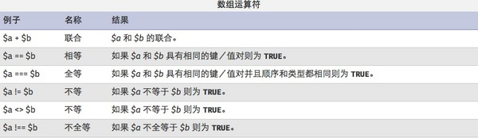

Resumen
Un array es, en programación, la organización ordenada de varias variables del mismo tipo. La colección de estos elementos de datos similares ordenados se denomina array. Podemos entender las variables de array de PHP como un "contenedor" que puede contener uno o más valores.
Para acceder al contenido de una variable, puedes usar directamente su nombre. Si la variable es un array, puedes usar una combinación del nombre de la variable y una clave o índice para acceder a su contenido.
Al igual que otras variables, usando operadores=puedes cambiar el contenido de los elementos del array. Los elementos del array se pueden acceder mediantearray[key]la sintaxis.

Operaciones básicas con arrays
Definición de arrays en PHP
<?php
$array = array();
$array["key"] = "values";
?>
在PHPLas formas de declarar arrays son principalmente dos:
1. Usandoarray()la función para declarar arrays.
2. Asignando valores directamente a los elementos del array.
<?php
//array数组
$users = array('phone','computer','dos','linux');
echo $users;//只会打印出数据类型Array
print_r($users);//Array ( [0] => phone [1] => computer [2] => dos [3] => linux )
$numbers = range(1,5);//创建一个包含指定范围的数组
print_r($numbers);//Array ( [0] => 1 [1] => 2 [2] => 3 [3] => 4 [4] => 5 )
print_r(true);//1
var_dump(false);//bool(false)
//print_r可以把字符串和数字简单地打印出来，数组会以Array开头并已键值形式表示，print_r输出布尔值和null的结果没有意义，因此用var_dump更合适
//通过循环来显示数组里所有的值
for($i = 0 ;$i < 5;$i++){
echo $users[$i];
echo '<br/>';
}
//通过count/sizeof统计数组中单元数目或对象中的属性个数
for($i = 0; $i < count($users);$i++){
echo $users[$i];
echo '<br/>';
}
//还可以通过foreach循环来遍历数组，这种好处在于不需要考虑key
foreach($users as $value){
echo $value.'<br/>';//点号为字符串连接符号
}
//foreach循环遍历 $key => $value；$key和$value是变量名，可以自行设置
foreach($users as $key => $value){
echo $key.'<br/>';//输出键
}
?>
Crear arrays con claves personalizadas
<?php
//创建自定义键的数组
$ceo = array('apple'=>'jobs','microsoft'=>'Nadella','Larry Page','Eric');
//如果不去声明元素的key,它会从零开始
print_r($ceo);//Array ( [apple] => jobs [microsoft] => Nadella [0] => Larry Page [1] => Eric )
echo $ceo['apple'];//jobs
//php5.4起的用法
$array = [
"foo" => "bar",
"bar" => "foo",
];
print_r($array);//Array ( [foo] => bar [bar] => foo )
?>
从php5.4Se puede usar la sintaxis corta de definición de arrays, usando[]en lugar dearray(). Es algo similar ajavascriptla definición de arrays en
Uso de each()
<?php
//通过为数组元素赋值来创建数组
$ages['trigkit4'] = 22;
echo $ages.'<br/>';//Array
//因为相关数组的索引不是数字，所以无法通过for循环来进行遍历操作，只能通过foreach循环或list()和each()结构
//each的使用
//each返回数组中当前的键/值对并将数组指针向前移动一步
$users = array('trigkit4'=>22,'mike'=>20,'john'=>30);
//print_r(each($users));//Array ( [1] => 22 [value] => 22 [0] => trigkit4 [key] => trigkit4 )
//相当于：$a = array([0]=>trigkit4,[1]=>22,[value]=>22,[key]=>trigkit4);
$a = each($users);//each把原来的数组的第一个元素拿出来包装成新数组后赋值给$a
echo $a[0];//trigkit4
//!!表示将真实存在的数据转换成布尔值
echo !!each($users);//1
?>
eachEl puntero apunta al primer par clave-valor, devuelve el primer elemento del array, obtiene su par clave-valor y lo envuelve en un nuevo array.
Uso de list()
listSe usa para asignar los valores de un array a algunas variables. Mira el siguiente ejemplo:
<?php
$a = ['2','abc','def'];
list($var1,$var2) = $a;
echo $var1.'<br/>';//2
echo $var2;//abc
$a = ['name'=>'trigkit4','age'=>22,'0'=>'boy'];
//list只认识key为数字的索引
list($var1,$var2) = $a;
echo $var1;//boy
?>
Nota:listSolo reconoce índices cuya clave sea numérica.
Ordenamiento de los elementos de un array
反向排序:sort()、asort()和 ksort()都是正向排序,当然也有相对应的反向排序. 实现反向:rsort()、arsort()和 krsort()。 array_unshift()函数将新元素添加到数组头,array_push()函数将每个新元素添加到数组 的末尾。 array_shift()删除数组头第一个元素,与其相反的函数是 array_pop(),删除并返回数组末 尾的一个元素。 array_rand()返回数组中的一个或多个键。 函数shuffle()将数组个元素进 行随机排序。 函数 array_reverse()给出一个原来数组的反向排序
Uso de varias APIs de arrays
Nota: count() y sizeof() cuentan el número de índices del array.
array_count_values() cuenta el número de valores de los índices en el array.
<?php
$numbers = array('100','2');
sort($numbers,SORT_STRING);//按字符串排序，字符串只比较第一位大小
print_r($numbers);//Array ( [0] => 100 [1] => 2 )
$arr = array('trigkit4','banner','10');
sort($arr,SORT_STRING);
print_r($arr);//Array ( [0] => 10 [1] => banner [2] => trigkit4 )
shuffle($arr);
print_r($arr);//随机排序
$array = array('a','b','c','d','0','1');
array_reverse($array);
print_r($array);//原数组的反向排序。 Array ( [0] => a [1] => b [2] => c [3] => d [4] => 0 [5] => 1 )
//数组的拷贝
$arr1 = array( '10' , 2);
$arr2 = &$arr1 ;
$arr2 [] = 4 ; // $arr2 被改变了,$arr1仍然是array('10', 3)
print_r($arr2);//Array ( [0] => 10 [1] => 2 [2] => 4 )
//asort的使用
$arr3 = & $arr1 ;//现在arr1和arr3是一样的
$arr3 [] = '3' ;
asort($arr3);//对数组进行排序并保留原始关系
print_r($arr3);// Array ( [1] => 2 [2] => 3 [0] => 10 )
//ksort的使用
$fruits = array('c'=>'banana','a'=>'apple','d'=>'orange');
ksort($fruits);
print_r($fruits);//Array ( [a] => apple [c] => banana [d] => orange )
//unshift的使用
array_unshift($array,'z');//开头处添加一元素
print_r($array);//Array ( [0] => z [1] => a [2] => b [3] => c [4] => d [5] => 0 [6] => 1 )
//current(pos)的使用
echo current($array);//z;获取当前数组中的当前单元
//next的使用
echo next($array);//a;将数组中的内部指针向前移动一位
//reset的使用
echo reset($array);//z;将数组内部指针指向第一个单元
//prev的使用
echo next($array);//a;
echo prev($array);//z;倒回一位
//sizeof的使用
echo sizeof($array);//7；统计数组元素的个数
//array_count_values
$num = array(10,20,30,10,20,1,0,10);//统计数组元素出现的次数
print_r(array_count_values($num));//Array ( [10] => 3 [20] => 2 [30] => 1 [1] => 1 [0] => 1 )
?>
current(): Cada array tiene un puntero interno que apunta a su elemento actual; inicialmente apunta al primer elemento insertado en el array.
Recorrido con bucle for
<?php
$value = range(0,120,10);
for($i=0;$i<count($value);$i++){
print_r($value[$i].' ');//0 10 20 30 40 50 60 70 80 90 100 110 120
}
?>
Ejemplos de arrays
Uso de la función array_pad
<?php
//array_pad函数，数组数组首尾选择性追加
$num = array(1=>10,2=>20,3=>30);
$num = array_pad($num,4,40);
print_r($num);//Array ( [0] => 10 [1] => 20 [2] => 30 [3] => 40 )
$num = array_pad($num,-5,50);//array_pad(array,size,value)
print_r($num);//Array ( [0] => 50 [1] => 10 [2] => 20 [3] => 30 [4] => 40 )
?>
size: la longitud especificada. Si es un entero positivo, se rellena a la derecha; si es negativo, se rellena a la izquierda.
Uso de unset()
<?php
//unset()的使用
$num = array_fill(0,5,rand(1,10));//rand(min,max)
print_r($num);//Array ( [0] => 8 [1] => 8 [2] => 8 [3] => 8 [4] => 8 )
echo '<br/>';
unset($num[3]);
print_r($num);//Array ( [0] => 8 [1] => 8 [2] => 8 [4] => 8 )
?>
Uso de array_fill()
<?php
//array_fill()的使用
$num = range('a','e');
$arrayFilled = array_fill(1,2,$num);//array_fill(start,number,value)
echo '<pre>';
print_r($arrayFilled);
?>
Uso de array_combine()
<?php
$number = array(1,2,3,4,5);
$array = array("I","Am","A","PHP","er");
$newArray = array_combine($number,$array);
print_r($newArray);//Array ( [1] => I [2] => Am [3] => A [4] => PHP [5] => er )
?>
array_splice() para eliminar elementos del array
<?php
$color = array("red", "green", "blue", "yellow");
count ($color); //得到4
array_splice($color,1,1); //删除第二个元素
print_r(count ($color)); //3
echo $color[2]; //yellow
echo $color[1]; //blue
?>
array_unique para eliminar valores duplicados del array
<?php
$color=array("red", "green", "blue", "yellow","blue","green");
$result = array_unique($color);
print_r($result);//Array ( [0] => red [1] => green [2] => blue [3] => yellow )
?>
array_flip() para intercambiar claves y valores del array
<?php
$array = array("red","blue","red","Black");
print_r($array);
echo "<br />";
$array = array_flip($array);//
print_r($array);//Array ( [red] => 2 [blue] => 1 [Black] => 3 )
?>
array_search() para buscar valores
<meta charset="utf-8">
<?php
$array = array("red","blue","red","Black");
$result=array_search("red",$array)//array_search(value,array,strict)
if(($result === NULL)){
echo "不存在数值red";
}else{
echo "存在数值 $result";//存在数值 0
}
?>
Más tutoriales
Para tutoriales más detallados, consulta:Tutorial de PHP
Autor: trigkit4
Fuente: http://segmentfault.com/a/1190000002723270
Haz clic para compartir notas
<p style="font-size:14px;">¡Las notas deben ser una extensión del contenido de este artículo!</p><br> <p style="font-size:12px;"><a href="../tougao.html" target="_blank">Para enviar un artículo, haz clic aquí</a></p> <p style="font-size:14px;"><a href="./runoob-user-test-intro.html" target="_blank">Cómo obtener el código de invitación de registro</a></p> <h3 class="text-muted"><i class="fa fa-info-circle" aria-hidden="true"></i> Antes de compartir notas, debes <a href=".." class="runoob-pop">iniciar sesión</a>!</h3> <p><a href="./runoob-user-test-intro.html" target="_blank">Cómo obtener el código de invitación de registro</a></p>